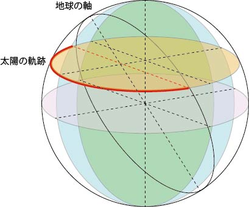
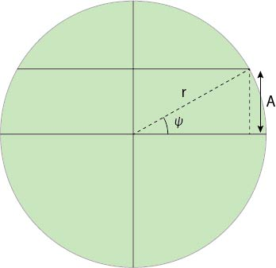
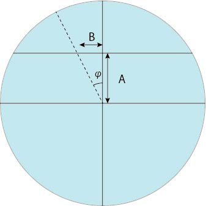
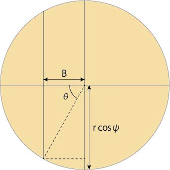
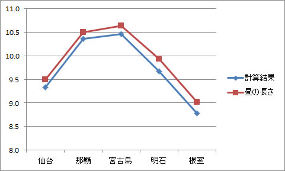

日照時間と地軸の傾きとの関係
全く，研究とは関係ないのですが，
日照時間と地軸の傾きとの関係ってどうなっているのだろう？
とふと思い，計算してみました．
これで，説明できるかどうかは．．．．．わかりませんが．．
まずは，地球の地軸と太陽の軌跡を考えてみます．
地軸は太陽に対して直交していないので，

こんな感じとなります．
この赤いラインがちょうど円の半分の時，日照時間が12時間となるのですね．
さて，緑色の面を考えましょう．

なので，
A = r×sin ψ
となります．
次に青色の面を考えましょう．

B =A×tan φ = r×sin ψ×tan φ
となります．
次に，オレンジの面を考えましょう．

オレンジの面の半径が，上の緑の面から計算した値となるので，
cos θ = B/(r×cosψ） = r×sin ψ×tan φ/(r×cosψ） = tan ψ×tan φ
となります．
ここで，一番上の図の赤い太陽の軌跡は，一周で24時間なので，
日照時間 = 2θ/(2π)×24
となりますので，
日照時間 = 24/π×cos-1 (tan ψ×tan φ)
となります．
さて，実際の値を入れてみましょう．
地軸の傾き = 23.43°
のようです．
各地の緯度と冬至の日照時間は，
| 場所 | 日照時間（冬至） |
仙台 |
9:30 |
| 那覇 | 10:30 |
| 宮古島 | 10:38 |
| 明石 | 9:56 |
| 根室 | 9:01 |
とのことでした（ここ，を参考にしました）．
計算結果との比較は，

となり，ほぼ．．．合っているようです．
若干，計算結果の方が短くなりますね．．．．
上の五都市の平均で言うと，11分ちょっと．．．
ん？もしかしたら．．．定義によると，
日の出・日の入り ： 「太陽の上辺が地平線（または水平線）に一致する時刻」を、日の出・日の入りの時刻
とありますね．．
つまり，
計算では，太陽を点として考えていた．
しかし，定義では，太陽の上辺の位置だった
つまり，ちょうど太陽の直径分計算結果にプラスしなければならない
と言うことです．
では，太陽自体が水平線を横切るのにどのくらいの時間がかかるのでしょう？